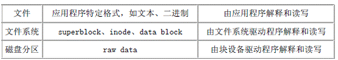

PID TTY TIME CMD
5819 pts/1 00:00:00 bash
5893 pts/1 00:00:00 cat
5894 pts/1 00:00:00 ps
$ kill -SIGKILL 5893
$（再次按回车键）
[1]+ Killed cat
$
kill命令如果不带参数而直接跟pid，就是发给该进程SIGTERM信号，大部分进程收到该信号就会终止。但是被挂起的进程不能处理信号，所以必须发SIGKILL信号，由系统强制终止进程。
在介绍相关的命令之间先了解一下磁盘、文件系统、数据文件的关系。

磁盘分区经过文件系统的格式化以后，裸盘数据(raw data)就被文件系统划分为superblock、inode、data block等。superblock保存着哪些块空闲、哪些块存储inode、哪些块存储数据块等信息。每个文件都对应一个inode和若干data block。inode中保存着文件的权限、访问时间等元数据，而文件的内容是保存在数据块中的。对于目录来说，inode保存目录的元数据，而数据块保存目录中所有的文件名。
mount [-lhV]
mount -a [-fFnrsvw] [-t vfstype] [-O optlist]
mount [-fnrsvw] [-o options [,...]] device | dir
mount [-fnrsvw] [-t vfstype] [-o options] device dir
加载文件系统。该命令的使用权限是超级用户或/etc/fstab中允许的使用者。
主要参数：
(1)-h：显示辅助信息。
(2)-v：显示信息，通常和-f用来除错。
(3)-a：将/etc/fstab中定义的所有文件系统挂上。